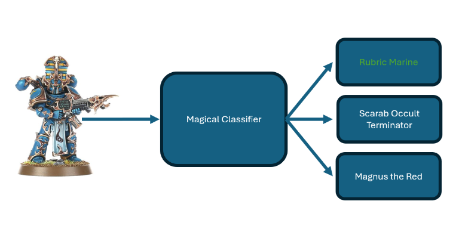

Week 6 - Machine Learning Crash Course
May 2024 (1406 Words, 8 Minutes)
Inspired by the AI challenge I solved last week for UMDCTF, I decided to try my hand at Machine Learning. I took a Linear Algebra course a few years back, and I’ve managed to keep my intuition about matrix-based math operations, which is a decent foundation to start learning about this field. I also remember the broad strokes of Neural Networks covered in these videos that I watched in high school:
I am by no means an expert in this field, as I am on day 9 of learning about ML, so take any of the information with a sizeable grain of salt.
Machine Learning, to my understanding, is a buzzword for any of a number of algorithms that continuously improve the longer it is run. Some mimic natural phenomena like evolution or neurons, but that’s not necessary. Machine learning algorithms seek to learn from data, and then use the learned state of the algorithm to make inferences about data that was not included in the original data set.
Let’s not worry about the specifics of the Machine Learning algorithm for now, and focus on the kinds of problems it can solve. Say you are a tabletop gaming store that has a wide variety of Warhammer 40k miniatures, each with a signature color scheme and silhouette, or perhaps a Japanese Bakery with a couple hundred kinds of pastries. You have the option of training up a 17 year old to run checkout so they can reliably tell the difference between a Scarab Occult Terminator and a Rubric Marine and accepting loss when the 17 year old screws up, or developing a system that will automatically differentiate between hundreds of different varieties of miniatures.
{kind=link}
{kind=link}

In more abstract terms, this means we want to take an input, in this context, probably a video feed, run it through some algorithm, then return one of a known amount of options: 
There are a slew of reasons why hardcoding this logic is impractical, chief among them are:
- Orientation of the product
- Lighting
- Paint scheme
- Altered silhouette from damage
- Skin color of the person holding the miniature
And dozens of other confounding factors. Plus hardcoding this logic would probably require taking thousands of photos with different conditions for each product, and comparing the current input with any of them. That would be both impractical and slow. Machine Learning algorithms were developed to address these kinds of issues, where the program needs to infer some kind of attribute about the input when the entire space of inputs (mathy talk for all possible inputs) is too large to precompute.
I’ll assume you know the some of the basics of Machine Learning from now on, including the following list of terms: model, neuron, layer, and gradient descent/ascent. In ML-land, there’s two important times of a models life. The training, and the inference. A brief lifecycle of an ML goes like this:
- A model is initialized with random weights and biases.
- Data is fed through the model
- The algorithm compares the result from the model with the true value of the input. The difference between these two values is called the
loss. - The algorithm does some funky calculus to calculate the gradient, then steps down/up the gradient by a set amount, which alters the current weights of the parameters.
- Steps 2-4 are rerun with different data until the desired performance is achieved.
This graduates the model from the training stage to the inference stage. Rather than continuously altering its parameters, a model is put into evaluation mode, where it will only return the output given an input. This makes the training stage much more computationally intensive than the inference stage. For example, the new Meta Llama 3 LLM can be run in inference mode locally, even though it took something like 1.3 Million GPU hours to train.
Let’s see some implementation. I started out doing image recognition by following this github repo by Ben Trevett. The first page is using a Multi-Layer Perceptron to recognize handwritten digits from the MNIST dataset. A Mult-Layer Perceptron is a group of fully connected layers, which is often illustrated like this:
I haven’t done anything with ML that’s worth showing off at the moment, but I’m working on a few things that will at least be interesting when they’re finished. For now, I’m going to include my roadmap of how to build the script detailed here, as the author Ben Trevett definitely knows his stuff, and understanding everything going on in the script will provide a solid foundation to base future learning in ML upon.
General workflow
- Import pytorch
- Set static seed for experimental consistency
- Load dataset using
datasets.MNISTclass - Create training transform with random rotation, crop, then turn to tensor and normalize to mean = 1, stdev = 0.5
- Create testing transform that turns to tensor, normalize to mean = 1, stdev = 0.5
- Load training data, applying training transforms
- Load testing data, applying testing transforms
- Split up training data into training data and validation data. 90% training data, 10% validation data. Validation data must be taken from the training data, not the testing data.
- Build iterators for training, validation, and testing data using
DataLoaderclass. - Define the Neural Network. Inherits from
nn.Moduleclass, has customforward(self, x: torch.Tensor)function which returnsy_pred.__init__defines the layers:
class MLP(nn.Module):
def __init__(self, input_dim: int, output_dim: int):
super().__init__()
self.input_fc = nn.Linear(input_dim, 250)
self.hidden_fc = nn.Linear(250, 100)
self.output_fc = nn.Linear(100, output_dim)
def forward(self, x: torch.Tensor):
batch_size = x.shape[0]
x = x.view(batch_size, -1)
h_1 = F.relu(self.input_fc(x))
h_2 = F.relu(self.hidden_fc(h_1))
y_pred = self.output_fc(h_2)
return y_pred, h_2
- Define an optimizer. This used the
optim.Adamclass. This - Define a criterion. This used
nn.CrossEntropyLoss()class. - Create a
trainfunction with signaturetrain(model, iterator, optimizer, criterion). This function: 1. Iterates through the contents of the iterator, which includes the input and the correct output. 2. Zero out the gradients of the optimizer. Basically set it to a blank slate. 3. Run the input through the model and save the prediction 4. Pass the prediction and the correct output through the criterion, saved asloss. 5. Update the gradient usingloss.backward(). 6. Step down the gradient usingoptimizer.step() - Create a
evaluatewith signatureevaluate(model, iterator, criterion). This function:- Set model to evaluation (not training) mode using
mode.eval()and set not gradient usingtorch.no_grad - Iterates through the contents of the iterator, which includes the input and the correct output.
- Run the input through the model and save the prediction.
- Calculate the loss using the criterion.
- Set model to evaluation (not training) mode using
- Define the amount of times you want the net to run through the datasets defined as
EPOCHS - If the loss is less than the best previous loss, save the model. using
model.state_dict() - Now that the model has been trained, we can do some fun visualization.
We can do a confusion matrix with metrics.confusion_matrix
We can do principal component analysis to flatten the data to 2 dimensions.
We can also do t-SNE (t-distributed stochastic neighbor embedding). This algorithm is “better” than PCA, thought it takes a little bit of reading to effectively use. It’s also much slower. Both PCA and t-SNE can be used to see the clustering of data groups.
We can also try and generate a perfect digit, which shows us that the model can be improved. Because the image is all noise, we can see the model is overclassifying.
We can look at the weights that the first layer (not the input layer) is looking at, revealing some ghosts of what that particular neuron is looking for:
More interesting stuff is on the way, I just have to slog through the grunt work before I get there.